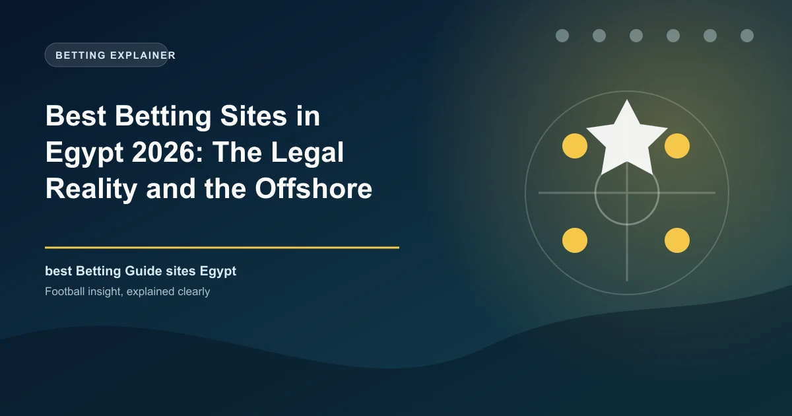

Best Betting Sites in Egypt 2026: The Legal Reality and the Offshore Grey Market

Egypt has no legal online betting for its own citizens. What it does have is one of the largest grey markets in Africa, a wave of app blocks, and a parliament preparing a Cybercrime Law amendment that could bring life sentences for the most serious offences.

Ask any Egyptian fan about betting apps and they will tell you the apps are everywhere. Ask an Egyptian lawyer and you will get a very different story: gambling contracts are void under the Civil Code, gambling is criminalised under the Penal Code, Egyptian nationals are separately prohibited from gambling, and online betting has never been licensed for residents. The gap between those two realities is the whole story of the Egyptian market in 2026.
Egypt Betting at a Glance
| Factor | Detail |
|---|---|
| Currency | Egyptian pound (EGP) |
| Regulator | None for online betting; Ministry of Tourism for land-based casinos; NTRA runs blocking |
| Legal online betting | None for Egyptian residents |
| Legal gambling | State lottery; retail sports betting via Egypt Post (Intralot, since 2005); casinos for foreign tourists only |
| Governing law | Civil Code Law 131/1948 (arts 739-740); Penal Code arts 271 and 352; Law 371/1956 |
| Enforcement 2026 | NTRA blocking up to 80% of betting apps; Cybercrime Law amendments pending |
| Population | About 110 million |
| Main sports | Football - Egyptian Premier League, Al Ahly, Zamalek, national team |
Know the Rules: What Egyptian Law Actually Says
The Egyptian Civil Code (Law No. 131 of 1948) is blunt. Article 739 declares any agreement relating to gambling or betting void, and Article 740 allows a loser to recover what they paid within three years. Bets between people personally participating in a sporting contest, and legally authorised lotteries, are exempt - a narrow door that covers the state lottery and little else. The Penal Code criminalises gambling generally (Articles 271 and 352), and Law No. 371 of 1956 specifically prohibits Egyptian nationals from gambling.
Land-based casinos exist only inside hotels, under Law No. 8 of 2022 on hotel and tourist establishments, and only for non-Egyptians; the sector is overseen by the Ministry of Tourism, which can take up to half of gambling revenue as a royalty. Online gambling is not separately codified - no law licences it and no authority regulates it, which is precisely the loophole offshore operators have exploited for years.
The Reality: One of Africa's Most Valuable Grey Markets
The research firm Blask has repeatedly called Egypt one of the most valuable grey markets on the continent. With no domestic licensing and weak enforcement until recently, offshore bookmakers licensed in Curaçao and similar jurisdictions targeted Egyptian users with Arabic-language apps, influencer marketing and VPN-friendly access. The standouts were 1xBet, which promoted itself heavily through Egyptian social media, and Melbet, with a long tail of other international brands accepting Egyptian deposits alongside them.
Payments run through bank cards, online wallets and channels that sit far from regulated rails, and every deposit reinforces a market that exists entirely outside Egyptian law. The honest framing for 2026 is simple: no site on any best-betting-sites list for Egypt is legal, and no Egyptian authority will help you if an offshore operator refuses to pay.
2026: The Crackdown Escalates
Enforcement has shifted from passive to aggressive in 2026. In September 2024, 1xBet was removed from Google Play and the App Store after complaints against its influencer-led promotion; in early 2026 parliament's communications committee confirmed similar action against Melbet as part of a broader takedown campaign. In February 2026, committee chair Ahmed Badawi announced that the National Telecommunications Regulatory Authority (NTRA) and the Supreme Council for Media Regulation were blocking roughly 80% of online betting applications, working from technical reports prepared with the committee.
The legal weapon coming next is an amendment to the Cybercrime Law that will explicitly criminalise online betting applications. Badawi has said the most serious offences - those involving organised criminal networks and large-scale fraud - could draw life sentences, going beyond the deputy-chair Martha Mahrous's January 2025 bill, which proposed two to five years and fines of EGP 1-5 million for agents and de facto managers, up to six months for payment facilitators, and two to five years with EGP 5-10 million fines for platform operators. As of mid-2026 the government text has not yet been tabled, but every signal points to one of the toughest online-betting regimes in the region. Early drafts also float fines for users who keep accessing banned apps.
What Is Actually Legal in Egypt in 2026?
The honest answer for residents is close to nothing. The state lottery operates under Law No. 93 of 1973, and licensed retail sports betting exists through the Egypt Post-Intralot arrangement from 2005, which allows betting mainly in physical locations. Foreign tourists can legally use the hotel casinos in Cairo and Red Sea resorts. For an Egyptian resident who wants to bet on football from a phone, the legal answer in 2026 remains no - and the enforcement trend is firmly against it.
The Risks in the Grey Market
Bettors using offshore apps in Egypt are running the full stack of risks. Sites vanish or change domains overnight, taking balances with them. Payment channels are being cut off, which means more deposits routed through risky intermediaries. Bank accounts can be flagged precisely because gambling transactions are illegal and monitored. And the legal exposure is rising: even if today's enforcement targets organisers, the incoming amendments could extend fines to users who continue to access banned platforms.
If you still choose to bet, the damage limitation is the same as everywhere: stake only what you can afford to lose, keep your own records, verify the operator's offshore licence on the regulator's website, and understand that you have no Egyptian legal protection whatsoever.
Responsible Gambling in Egypt
With no licensed market, no regulator, no helpline and a tightening enforcement regime, the safest position for an Egyptian bettor is simply not to bet. Never chase losses, never borrow to gamble, and if betting stops being entertainment, seek professional support away from the industry. The one bet any Egyptian can guarantee to win is the one never placed.
Frequently Asked Questions
Is online betting legal in Egypt?
No. Gambling contracts are void under the Civil Code (Law 131/1948), gambling is criminalised under the Penal Code, and Egyptian nationals are separately prohibited from gambling by Law 371/1956. There is no licensed online betting for residents.
Why do so many international betting sites still accept Egyptian players?
Egypt has never codified online gambling, leaving a gap that offshore operators licensed in Curaçao and similar jurisdictions exploit. Enforcement was historically weak, which changed sharply in 2026 with app blocks and planned law changes.
Is 1xBet legal in Egypt?
No. 1xBet has no Egyptian licence and was removed from the Google Play and App Stores in September 2024 after complaints about its influencer-led marketing. It is one of the main targets of the 2026 blocking campaign and the proposed Cybercrime Law amendments.
What are the penalties for betting online in Egypt?
Under current law a participant in illegal gambling can face fines and up to around three months in prison, while organisers face far longer terms and asset confiscation. Pending Cybercrime Law amendments could bring multi-year sentences and fines up to EGP 10 million for operators.
Can Egyptian players win their money back from offshore betting sites?
Effectively no. Offshore operators are not licensed in Egypt, answer to a foreign regulator, and have no obligation to repay Egyptian players. The Civil Code allows recovering losses from gambling, but collecting that from an offshore company is rarely practical.
Put These Principles Into Practice Today
Every strategy on this page is only as good as the markets you apply it to. Check the latest predictions, odds, and in-play opportunities below.
Last updated: August 2026 | By Tochukwu Mesigo |
Build Winning Accumulator Tickets
Generate optimized accumulator combinations from today's data-driven predictions. Set your target odds and get instant ticket suggestions.
Pro Ticket Builder →